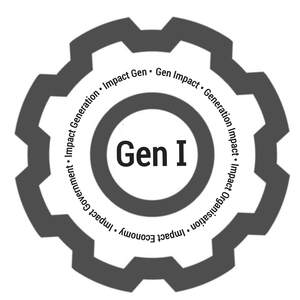

Trade Mark Journal No.2025/047 21 November 2025
UK00004294210 13 November 2025 (9,25,35,36)
Mark 1

Mark 2
- Class 9
- Software; computer software, computer and mobile applications software; software applications; computer applications; database applications; mobile software; mobile software applications; community networking software; software, computer applications, databases, mobile applications and computer software for connecting together citizens, organisations, society and communities; applications, software, mobile applications and computer software providing intelligent connectivity between active citizens, organisations and communities; applications utilising artificial intelligence; computer, software and mobile applications utilising artificial intelligence and connecting individuals, organisations and communities together; computer, software and mobile applications utilising artificial intelligence and connecting citizens, organisations and communities together to enable impactful collaboration to take place; computer and application software connecting communities together to impactfully solve environmental and community problems; computer and application software connecting communities together to improve wellbeing; computer and application software connecting communities together to improve individual wellbeing, societal wellbeing, economic wellbeing and environmental wellbeing; computer and application software connecting communities together to impactfully solve environmental problems and create a regenerative economy; computer and application software connecting communities together to recycle, restore, reuse, repair, regenerate household goods; computer and application software connecting communities together to impactfully solve complex problems; application software for social networking services via internet; software for displaying citizen profiles, practitioner profiles, youth profiles, learner profiles, leader profiles and social media profiles; software and mobile applications displaying citizen profiles, practitioner profiles, youth profiles, learner profiles, leader profiles and social media profiles; software and mobile applications displaying citizen profiles, community profiles, organisation profiles, and social media profiles; social media software; communication, networking and social networking software; software applications for sharing stories; podcasts; reels on social media; applications software relating to the provision of news, current affairs and topics of general interest; downloadable applications software relating to the provision of news, current affairs and topics of general interest.
- Class 25
- Clothing; headgear.
- Class 35
- Stewardship of cross generational groups of active citizens; stewardship of a cross generational collective of active citizens; administration and management of cross generational communities collectively focused on impact and purposeful action; administration and management of cross generational communities collectively focused on impact, active citizenship and becoming purposeful citizens; administration and management of cross generational communities collectively focused around purpose and impact; administration and management of cross generational communities collectively focused on impact and being purposeful; administration and management of cross generational communities; community administration and management; business administration and management; organisation administration and management; government administration and management; organisation of volunteering; organisation of volunteering for others; administration, management and display of citizens roles, citizen titles, role descriptions and personal profiles; administration, management and display of community roles, job titles, job descriptions and personal profiles; administration, management and display of government roles, job titles, job descriptions and personal profiles; administration and management of community activities, impactful collaborative ventures, collective decision making, co-operative action, change programmes, and projects; administration and management of collaborative ventures, collective decision making, co-operative action, change programmes and projects; advertising of citizen groups, government organisations, non government organisations, charities, not for profit organisations, institutions, communities, neighborhoods, individuals and groups; advertising of citizen groups, government organisations, non government organisations, charities, not for profit organisations, institutions, communities, neighborhoods, individuals and groups; marketing of citizen groups, government organisations, non government organisations, charities, not for profit organisations, institutions, individuals and groups; advertising of citizen groups, government organisations, non government organisations, charities, not for profit organisations, institutions, communities, neighborhoods, individuals and groups in relation to social action, climate action, environmental action, purposeful action, political action, strategy, vision, mission, purpose, development and learning, wellbeing, sustainability, volunteering, community action and good deeds; marketing of citizen groups, government organisations, non government organisations, charities, not for profit organisations, institutions, communities, neighborhoods, individuals and groups in relation to social action, climate action, environmental action, purposeful action, political action, strategy, vision, mission, purpose, development and learning, wellbeing, sustainability, volunteering, community action and good deeds; administration and management making use of citizen centric indicators, impact metrics, measures and scores to help guide decision making and change management programmes; administration and management making use of citizen centric indicators, metrics, measures, scores, verbatim feedback and data to help guide decision making and change management programmes; administration and management making use of citizen centric indicators, metrics, measures, scores, verbatim feedback, data and artificial intelligence enabled systems to help guide decision making and change management programmes; administration and management making use of meaningful indicators, metrics, measures and scores to help guide decision making and change management programmes; administration and management making use of meaningful indicators, metrics, measures, scores, verbatim feedback and data to help guide decision making and change management programmes; administration and management making use of meaningful indicators, metrics, measures, scores, verbatim feedback, data and artificial intelligence enabled systems to help guide decision making and change management programmes; administration of recognition and rewards systems; administration of points schemes; administration and management of points systems related to purposeful action and active citizenship; providing information relating to employment; providing employment references; providing employment information via curriculum vitae and references; marketing and advertising of citizen roles and political jobs; marketing and advertising of citizen roles, political positions and job roles; providing advice and consultancy relating to political appointments; appointment and recruitment to political posts; government marketing; political marketing, advertising and promotional services; promotional services for political purposes; news and current affairs clipping services; public relations for political purposes; public relations for politicians and political parties; public consultations; public opinion polling; public opinion surveys; administration and management of voting systems, polling, surveys, collaboration, knowledge and wisdom development, public decision making and community decision making; providing political ratings to support public decision making; providing political rankings to support public decision making, public relations, marketing and advertising; opinion polling; advertising; marketing; promotional services; advertising, promotion and retail services related to clothing and headgear; information, advisory and consultancy services relating to all the aforesaid.
- Class 36
- Fund raising for charities, not for profit organisations and good causes; fund raising and financing of charitable organisations, voluntary organisations and good causes; fund raising and fund raising services; fund raising; arranging charitable fundraising events; arranging charitable fundraising activities; fund raising for charitable purposes; fund raising for charities; charitable fund raising; fund-raising services; fundraising and awarding of grants; charitable fundraising; fund raising for charity; charitable fundraising and awarding of grants; provision of finance, capital, grants and loans by government and financial organisations; provision of grant funding, partnership funding and alternative types of funding to other organisations; grant funding, partnership funding and alternative types of funding received from other organisations; charitable collections; charitable fundraising services; fund raising for schools; fund raising for colleges and universities; funding of schools and academies; fund raising for educational establishments; grants, fund raising and financing of academies, schools, colleges, universities, research organizations and other educational establishments; fund raising for schools, academies, colleges, universities and other educational establishments; issuance and redemption of points, credits, awards and vouchers of value; issuance of points, credits, awards and vouchers which may then be redeemed for goods or services; issuance and redemption of tokens of value; issuing gift certificates which may then be redeemed for goods or services; grants for schools and academies; management of trusts and trust funds; management of educational trusts and trust funds; investment of funds for charitable purposes; crowdfunding; crowdfunding services; fund raising services via crowdfunding website; business investment; financing of and relating to collaborations; providing educational scholarships; monetary grants to charities; financial sponsorship; fundraising and sponsorship; organization of monetary collections; philanthropic services concerning monetary donations; online charitable fundraising services; monetary grants to service providers; information, advisory and consultancy services relating to all the aforesaid.
Good Turns Ltd